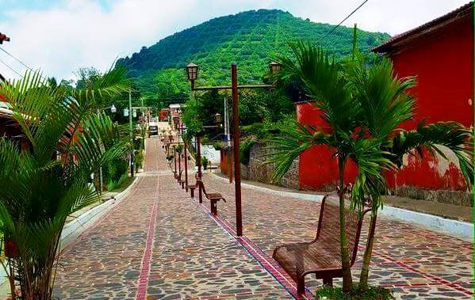

El Salvador, popularmente conocido como el Pulgarcito de América, es un país que posee diversas
rutas
turísticas que permiten a los visitantes disfrutar de aspectos como la gastronomía, la naturaleza,
el
ecosistema volcánico único del país, la arqueología, la arquitectura colonial, la aventura o el
surf,
pueblos vivos, entre otros.

Debido a la diversidad de opciones se han creado diversas rutas turísticas de El Salvador que
agrupan los destinos existentes en una zona geográfica y que comparten características en común,
para que puedan ser visitados en unas pocas horas o en un solo día.
Por lo general estos recorridos se hacen por medio de guías turísticos los cuales pueden encontrarse
en las localidades de la ruta o por medio de algún operador turístico salvadoreño.
La ruta turística más visitada de El Salvador es la ruta Sol y Playa que comprende la zona costera
del país y en segundo lugar de popularidad se encuentra la ruta de Las Flores, la cual comprende
algunos municipios del occidente del país
Estas rutas han sido creadas para ofrecer a los turistas nacionales y extranjeros una opción para que
puedan conocer y descubrir la belleza natural de los paisajes, la cultura y su gente. Al mismo tiempo el
turismo contribuye al desarrollo local ya que permite la generación de empleo.
Te invitamos a conocer El Salvador por medio de sus diferentes rutas turísticas, en las cuales sin duda
alguna te sorprenderás y descubrirás nuevas cosas de nuestro país.